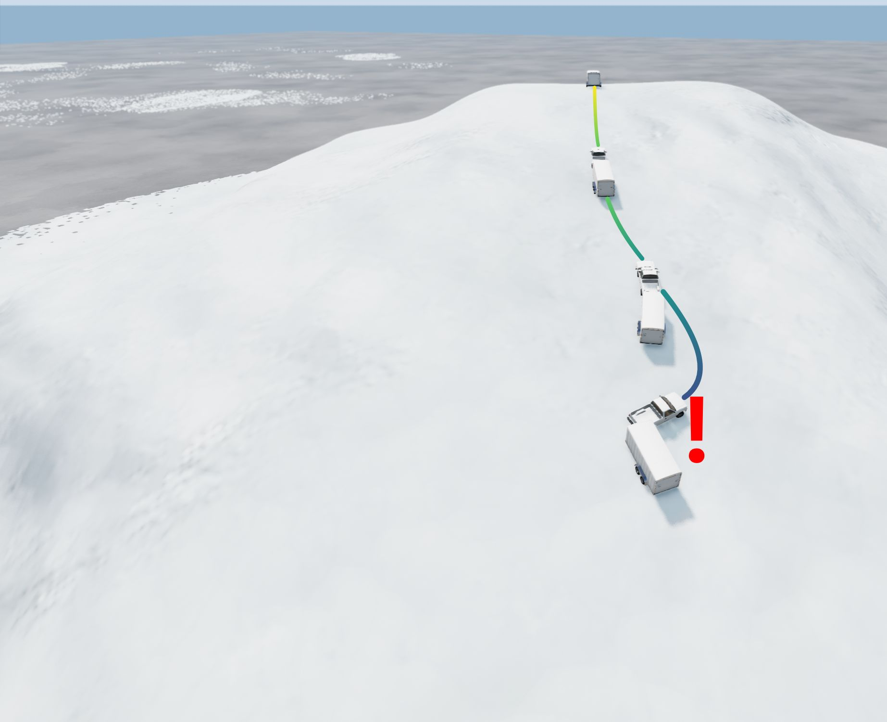
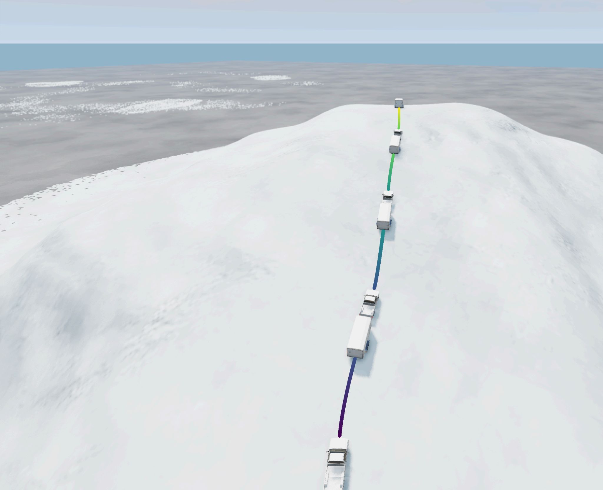
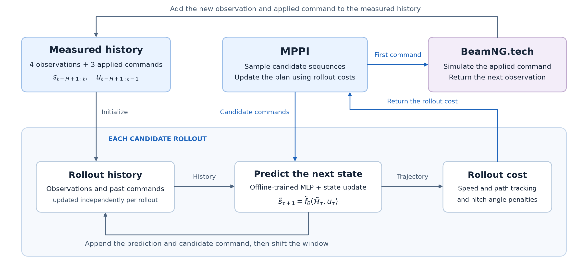
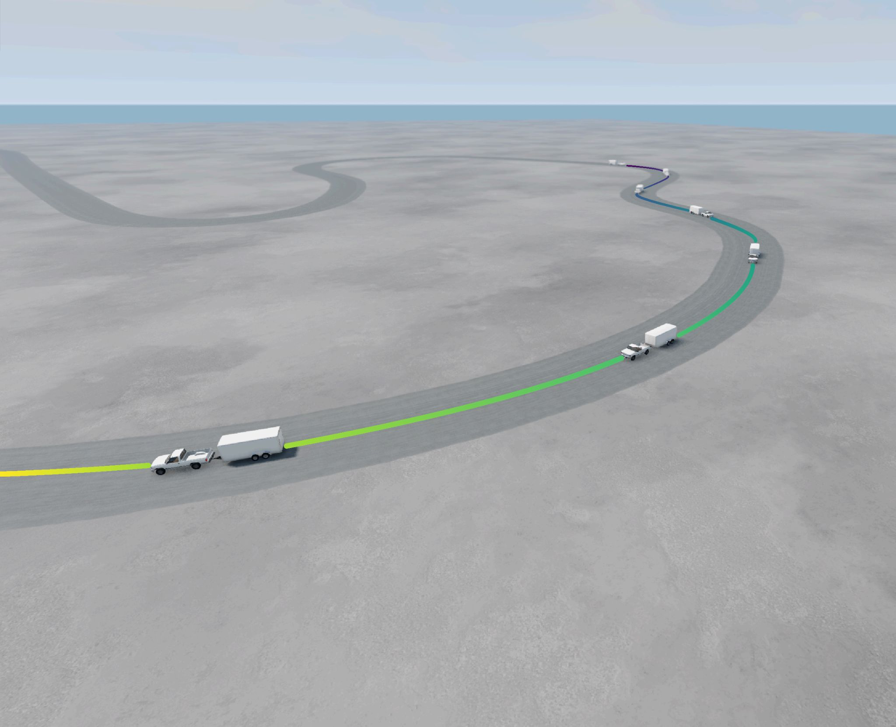
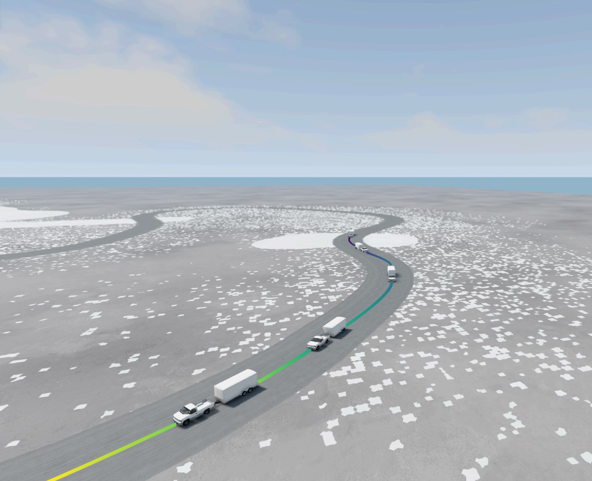
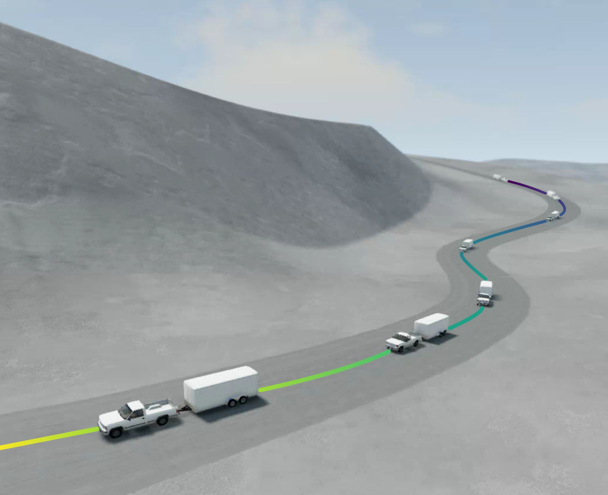
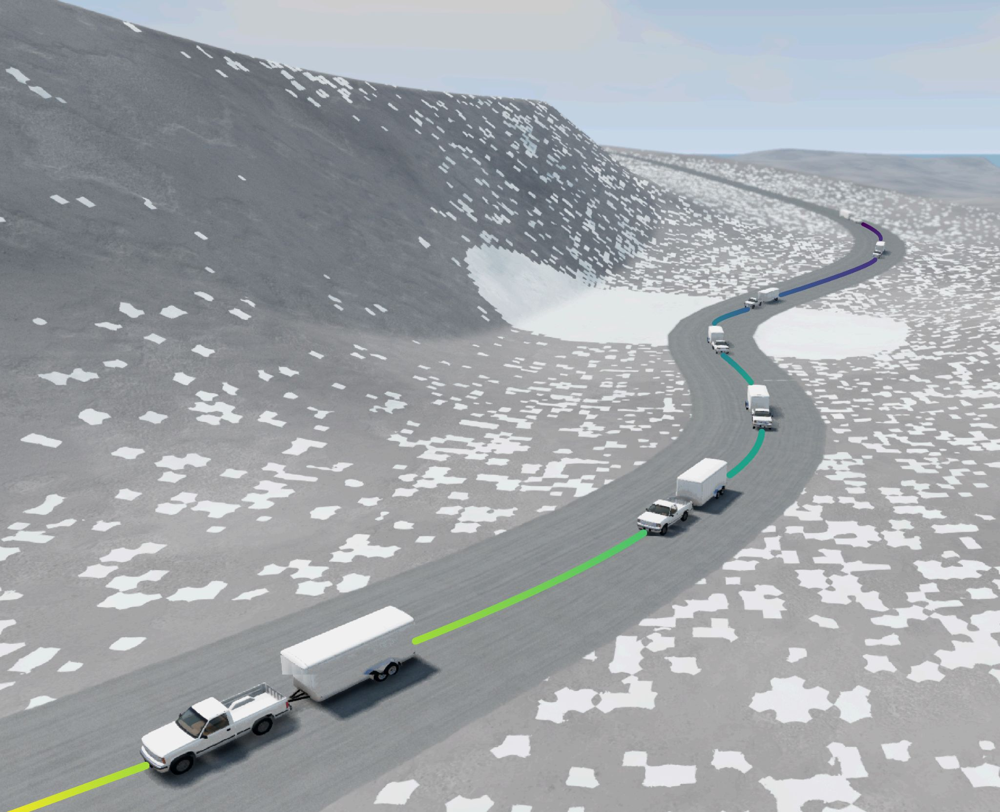
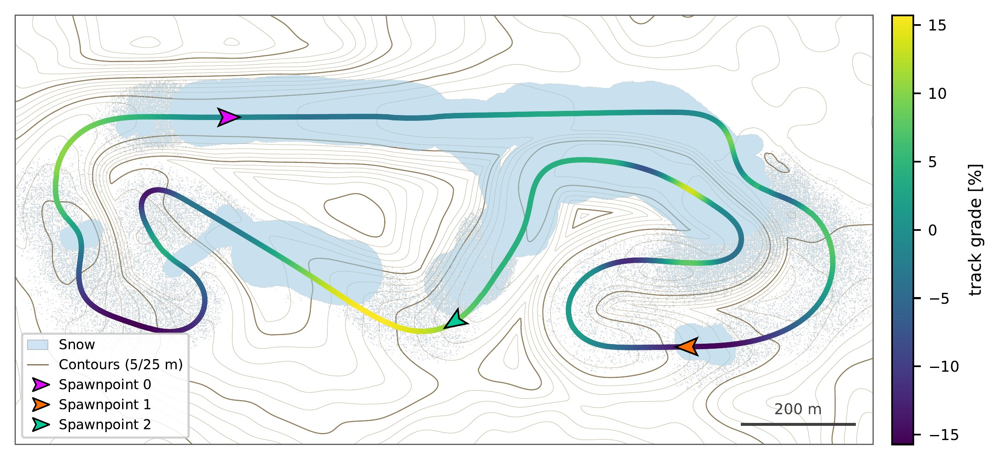
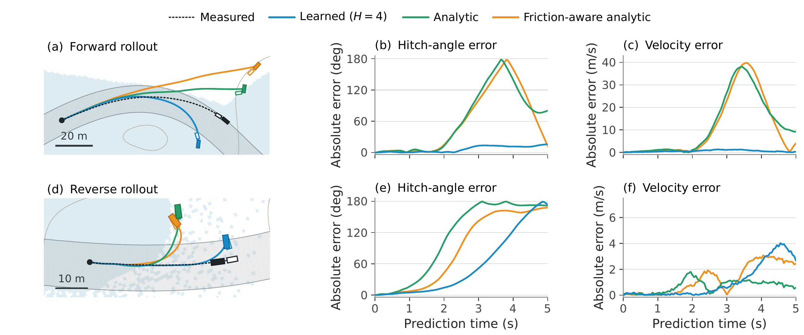

Track the target speed
Reach the commanded forward or reverse velocity without stalling.
High-speed reverse driving · Hidden vehicle dynamics · Snow and uneven terrain
We learn tractor–trailer dynamics from recent motion to improve control when friction and terrain are unknown. In BeamNG.tech, we test reverse driving at target speeds of 30 and 50 km/h and forward driving at 80 km/h.
Learned MPPI completes 62 of 72 reverse trials, compared with 41 of 72 for analytic MPPI, with the improvement coming from fewer stalls. Both complete all 36 forward trials. The learned controller also transfers to slopes and banking absent from training, though reverse stalls remain a challenge on snowy slopes.
Track the target speed, stay on the road, and avoid jackknifing.
Reach the commanded forward or reverse velocity without stalling.
Keep the tractor–trailer articulation bounded to avoid jackknife.
Condition predictions on observed history without explicit friction or terrain inputs.
A passive trailer is difficult to stabilize in reverse. Snow and uneven terrain make accurate motion prediction harder.
The tractor controls a passive trailer through the hitch. A steering correction changes both vehicles’ motion.
Small motion errors can grow into a jackknife. Higher speed leaves less time to correct them.
Friction, slope, banking, and suspension affect the vehicle’s response but are not direct inputs to the learned model.
Much of tractor–trailer control research focuses on parking and low-speed navigation. We study reverse driving near handling limits, where errors in the dynamics model directly affect control.


History-conditioned dynamics within MPPI for reliable tracking across four environments.
Five-second rollouts from learned dynamics and analytic priors with and without recorded contact-friction information.
Selected predictors with one, four, and eight steps of history on a separate Snow + Slope segment.
A neural network predicts vehicle motion from a short state-action history. MPPI uses these predictions to choose steering and throttle/brake commands.

The predictor is an MLP with four hidden layers of 128 units each.
The model uses hitch angle, velocities, yaw rates, actuator responses, and commands to predict accelerations and actuator rates. Kinematics update position and heading.
Training runs used flat asphalt at five uniform friction levels. Forward runs included weaving and command noise. Additional reverse runs covered larger hitch angles.
For comparison, we use a planar tractor–trailer model with Fiala tire forces.
We add snow and terrain changes separately to a Barcelona-Catalunya track layout in BeamNG.tech. Slope and banking are absent from training. The same snow pattern and terrain are reused in the combined setting.





Each speed and environment has nine trials: three seeds at three starting locations. Completion means reaching 500 control steps (25 seconds), not finishing a lap.
Learned MPPI improves completion in seven of eight reverse configurations, with 21 fewer stalls across all reverse trials.
Both MPPI variants complete all 36 forward trials. Learned MPPI brings mean speed closer to target and lowers RMS hitch angle at every forward and reverse setpoint compared with analytic MPPI.
Learned MPPI completes 16/18 reverse trials on Slope and 10/18 on Snow + Slope. Snowy slopes remain the hardest setting.
At the 50 km/h reverse target on Asphalt, learned MPPI averages 47.2 km/h and completes all nine trials. Analytic MPPI averages 22.7 km/h and completes six. Mean speeds include unsuccessful trials.
For each five-second segment, all three models start from the same measured state and replay the same recorded commands without resets. We compare the learned model with two analytic variants, one with fixed friction and one given the recorded contact friction.

Across the eight selected direction–environment segments, learned dynamics achieve the lowest position RMSE in six and the lowest hitch-angle RMSE in seven. Recorded friction information does not consistently close the analytic model’s prediction gap.
On Snow + Slope, the learned model delays the growth of reverse hitch-angle error, which still becomes large late in the rollout. The five-second diagnostic exceeds the controller’s planning horizons of 4.0 seconds forward and 3.25 seconds reverse.
On a separate Snow + Slope segment, we compare one, four, and eight steps of history, plus analytic MPPI. Each predictor has three trials per direction, at targets of 30 km/h in reverse and 80 km/h forward.
| Predictor | Reverse | Forward |
|---|---|---|
| 1 step | 0 / 3 | 0 / 3 |
| 4 steps (standard) | 3 / 3 | 0 / 3 |
| 8 steps | 3 / 3 | 3 / 3 |
| Analytic MPPI | 2 / 3 | 0 / 3 |
The four- and eight-step predictors complete all reverse trials. Only the eight-step predictor completes all forward trials, averaging 64.0 km/h against an 80 km/h target.